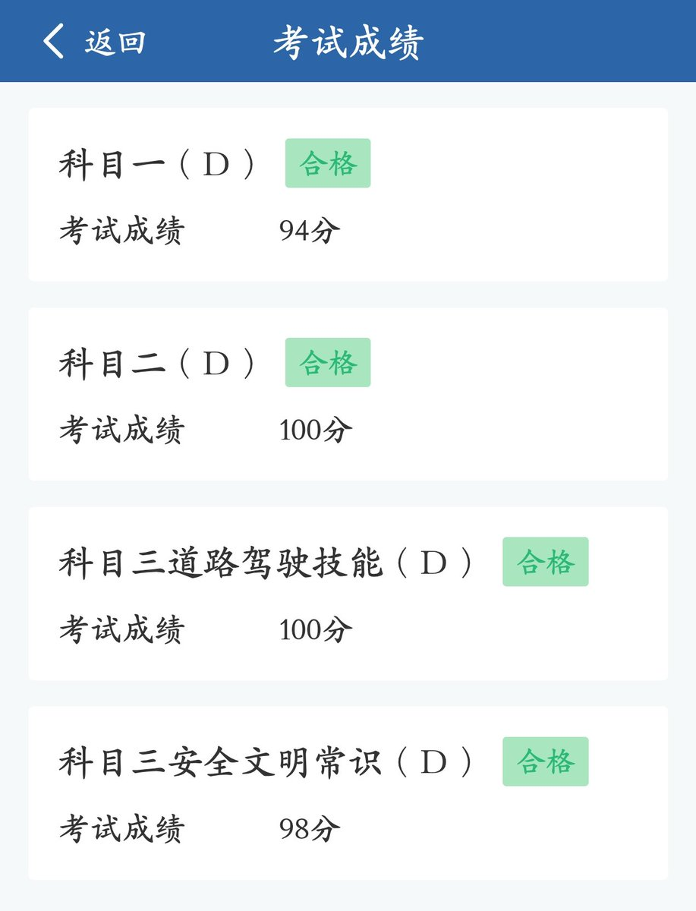

说一下感想：
驾考这种容错率非常低的实操考试，我这辈子都不想再经历了，相比之下上班虽然辛苦，但是至少不用持续承受这种精神痛苦。
所以，心里那种向前走的渴望，又因为这种对比被点燃了。
只是没多久，我还是回到了以前的心理状态里——让我面对那个未来，我还是觉得心里不是滋味。
考驾照是一场有终点、有明确规则、且只需要坚持一上午的短期战役；而面对未来，是一场漫长、未知，而且随时可能再度引发自己创伤体验的无期徒刑……
驾考这种容错率非常低的实操考试，我这辈子都不想再经历了，相比之下上班虽然辛苦，但是至少不用持续承受这种精神痛苦。
所以，心里那种向前走的渴望，又因为这种对比被点燃了。
只是没多久，我还是回到了以前的心理状态里——让我面对那个未来，我还是觉得心里不是滋味。
考驾照是一场有终点、有明确规则、且只需要坚持一上午的短期战役；而面对未来，是一场漫长、未知，而且随时可能再度引发自己创伤体验的无期徒刑……
